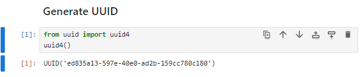
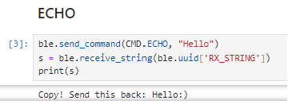
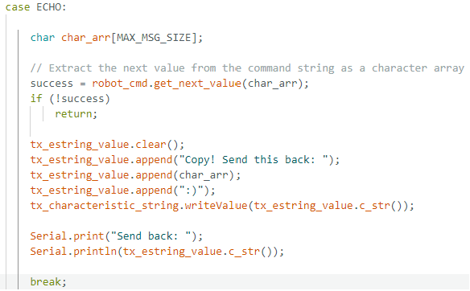
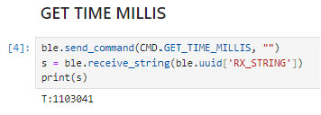
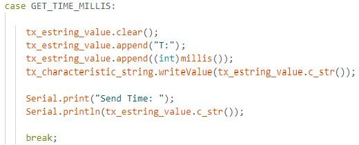

Hi there. Welcome to my webpage for ECE 5160 Fast Robots. Most of the links here are still under construction...
about me
I'm a graudate student in CAIR lab, Cornell AgriTech. During my free time I'd like to go outdoors.
To be continued.
LAB1: The Artemis board and Bluetooth
PART1: The Artemis board
Lab Objective
This part acts like a introduction to the Artemis board and the Arduino IDE. By testing examples in the library, we gradually become familiar with the process of using Arduino boards.
Prelab
Setup Arduino environment is reletively simple. We first install the Arduino IDE and install the Sparkfun Appollo3 library accodring to the setup instructions. Then hook the Artemis board up to the computer, select a corresponding borad. Now we are good to uploud examples.
Example: Blink it Up
As the first code we tested, the "Blink it up" example turns the LED on and off periodically.
Example: Serial
In this example we test the serial output and the function of serial monitor. When we send an input to interface, the Artemis board would send it back to the serial monitor as the video shows.
Example: analogRead
In the third example we test the fuction of temperature sensor and the board's ability to read analog values. As you can see in the video, the original "temp" value is around 33.9 Celsius. I hold the board still for a while and the reading goes up a little to 34.0 Celsius.
Example: MicrophoneOutput
This example tests the function of microphone unit. It has the ability to print out the loudest frequency the board received.
Please turn down your volume a little bit before click the video. Thanks for your understanding!
5000-level: Electronic Tuner
On top of the MicrophoneOutput example, I write a code to make the board act like a electronic tuner. As the "Ode To Joy" goes, the board will identify the frequency of each note and print out a "C", "E" or "F" whenever it encounter one. (Unfortunately there are no "A"s in Ode To Joy.) And it will blink for 0.5 second when it hear a "C", which can be noticed in the video.
The logic behind is pretty simple. We can search on the internet for the frequencies of musical notes. For example, C5 is 523.25Hz. But in my case, it turns out to be around 526Hz. Due to the deviation in pitch accuracy, and certain overtones produced during the instrument performance, it's hard to fully encode all the musical notes. But it can be an interesting task in the future practice.
PART2: Bluetooth
Lab Objective
The objective of this part is to establish communication between PC and the Artemis board through the Bluetooth connection. On PC side we use Python3 in Jupyter notebook, while on the Artemis side we use the Arduino programming language, which is a simplified version of C/C++. We will get familiar with the process of sending data via Bluetooth that will be useful in future labs.
Prelab
1. Setup
PC side: Install Python, Create and Activate Virtual Environment, Install Python Packages, Using Jupyter Server.
Artemis side: Install ArduinoBLE, Using ble_arduino.ino.
For this 2024 spring class, I'm using Win11 and I went through all the setups and tasks without using WSL, although I still spent some time trying to install it. It turns out that all the errors popped up can be fixed inside Windows11.
2. Codebase
The Python and Artemis packages are provided to establish a basic communication between PC and the Artemis board through BLE. We will modify on top of the codebase
Workflow
To start with, let me priefly introduce the general workflow of writing a new bluetooth function.
On Artemis side: Twosteps. First, add CommandTypes, so that the board can handle commands accordingly. Second, add a case under switch function, define the specific function inside this case. Typical output steps are Serial.print() and Serial.println(), which print out to the serial monitor and send message via bluetooth, respectively.
On PC side: add CMD(Enum) in cmd_types.py just like CommandTypes
Use ble.send_command() and ble.receive_string() pair to send and receive message. Or use ble.start_notify() to start a notification handler, which we will cover below.
Establish Bluetooth Connection
First, upload the ble_arduino.ino into the board. Once finished, the MAC address will be printed in the serial monitor. Replace the first line in connection.yaml file with this address.
Second, in order to differentiate from other students' boards, generate a new Universally Unique Identifier (UUID) by using lines below.

Replace the second line in connection.yaml file with this UUID. Replace the BLEService UUID in ble_arduino.ino with this UUID too.
Last, run the demo.ipynb notebook to make sure Bluetooth connection is established.
Task1: ECHO
First we write a "ECHO" command to let Artemis send back a signitured string to test the send & receive functions via bluetooth. On PC side the code and result looks like this:

On Artemis side the code looks like this:

Task2: GET TIME MILLIS
On top of string transmission, we use millis() function in Artemis to send back the time information. On PC side the code and result looks like this:

On Artemis side the code looks like this:

Task3: Notification Handler
When we use ble.receive_string to receive information from Artemis, the entire Python program enters a waiting state and does not handle other tasks, which is very time-consuming in practical use. To address this issue, we developed the Notification Handler function. When we activate this function, the callback function is called to process the information every time Bluetooth receives it, and it does not occupy the thread when there is no new information. The following video shows the specific implementation and result:
5000-level: Electronic Tuner
On top of the MicrophoneOutput example, I write a code to make the board act like a electronic tuner. As the "Ode To Joy" goes, the board will identify the frequency of each note and print out a "C", "E" or "F" whenever it encounter one. (Unfortunately there are no "A"s in Ode To Joy.) And it will blink for 0.5 second when it hear a "C", which can be noticed in the video.
The logic behind is pretty simple. We can search on the internet for the frequencies of musical notes. For example, C5 is 523.25Hz. But in my case, it turns out to be around 526Hz. Due to the deviation in pitch accuracy, and certain overtones produced during the instrument performance, it's hard to fully encode all the musical notes. But it can be an interesting task in the future practice.